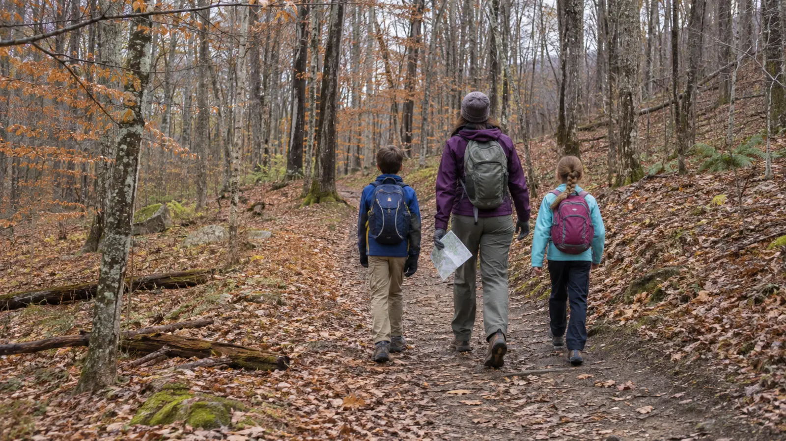

Start: Apple Trail
Use the Apple Trail and roads as the simplest official accessibility-oriented choice. “Accessible” is not a promise that every surface, grade or weather condition works for every device.
PHOENIX · FREE OUTDOOR PLAN · AUTHORITY-EXPANSION
Great Bear gives families a lot of trail for zero admission. That is also the trap. Start with the Apple Trail and roads, check the map at every junction, and turn back while the kids still have legs.

Great Bear works when the family wants woods, distance and no ticket. It fails when an adult treats eleven miles of connected rustic trails like a signed playground loop. For a first visit with school-age kids, budget 75 to 100 minutes, begin on the Apple Trail or adjacent roads shown on the current map, and keep the first outing deliberately short.
The Friends say most trails have colored disks, some have name signs and some are not marked. Their map page also warns that trails may not be marked or maintained and that known and unknown hazards exist. Carry the current PDF and a charged phone with an offline screenshot. Better yet, play the 25-minute trail-map game at home first.
The Friends and Town of Volney pages reviewed November 9 list Great Bear as always free with free parking; no reservation or admission purchase was stated. A live map commonly puts the County Route 57 trail area roughly 30 to 40 minutes from central Syracuse in ordinary traffic, but that is a planning assumption, not a guaranteed drive. Check the route, construction and weather before departure.
No staffed visitor center, food service, potable water or public restroom was promised on the official pages reviewed. Plan as if none exists. Eat before arrival, carry water and use a confirmed restroom in Phoenix or Fulton before the trail. Call the Town or Friends if a facility decides whether your family can go.
Keep the load small. The no-cell-service day-trip plan covers the adult check-in and offline information without turning a short walk into an expedition.
Friends of Great Bear says stream crossings have wooden bridges and warns winter users to watch them. Wet leaves, frost and packed snow change traction. Walk; do not race children across. The Oswego River and a stony beach are separate hazards, not the first-visit reward. Skip wading and swimming unless current conditions, local rules, water quality, temperature and supervision all support it.
Dogs are welcome under control and waste must be removed. “Under control” is not permission to let a dog approach children, wildlife, horses or other dogs. For winter, the official page says trails are not groomed; snowshoers should travel beside ski tracks, not on them. Electric bikes, motorbikes and ATVs are not allowed, and the area is daytime-only with no overnight camping or hunting.
The map page identifies Apple Trail and roads as accessible to wheelchair users. That broad statement does not establish surface firmness, clear width, cross slope, bridge edge protection, parking-space dimensions, restroom access or current snow clearance. Contact the Friends or Town when a specific feature matters.
Skip Great Bear today if the family needs guaranteed restrooms, a staffed desk, a paved loop, reliable cell service, a playground finish, or certainty that mud and bridges are clear. Also skip when the map cannot be saved, daylight is short, anyone is already tired or the family weather cutoff says shorten or leave.
Rain or freeze: use a shorter road/Apple Trail out-and-back or postpone. Marker confusion: reverse to the last confirmed junction. Dog conflict: create distance and return. Child done: snack once, then exit on the known route. Parking full: do not improvise roadside parking. Low energy: photograph the kiosk map, walk ten minutes and return. Indoor backup: use the three-object mini museum at home.
Reviewed November 9, 2026 using the Friends of Great Bear map and route guidance, activities and rules, and the Town of Volney hours and recreation FAQ. The 90-minute route, 35-minute turnaround and three-clue junction check are independent editorial tools, not park policy. No affiliate or booking links are attached.
MAKE THE WEEK COUNT
Build the plan your family can finish well, then leave enough energy for the next part of the day.
More family plans